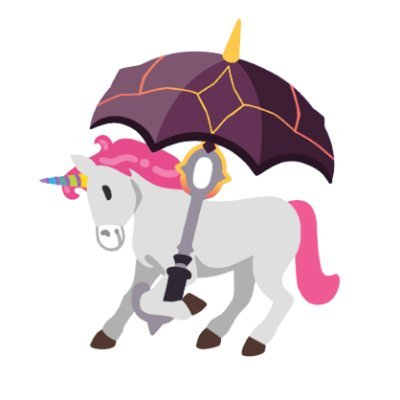

Hola! Soy @rllcle, Soy un dibujante digital de la ciudad de Potosí, Bolivia.
Me gusta el diseño de personajes y la ilustración de mecanismos.
Disfruto con el uso de perspectiva y escorzo. Posteo mis dibujos muy de vez en cuando
 Mis Dibujos
Mis Dibujos